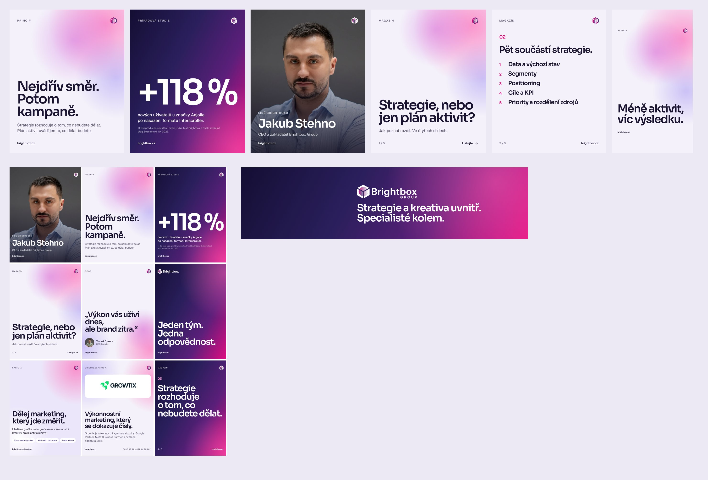
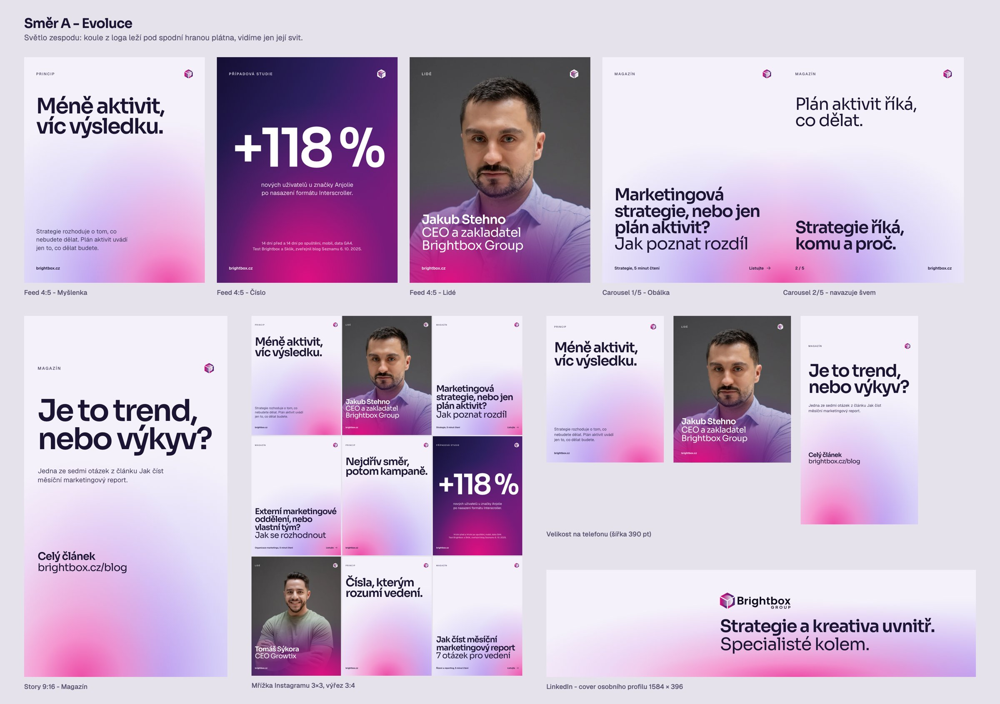
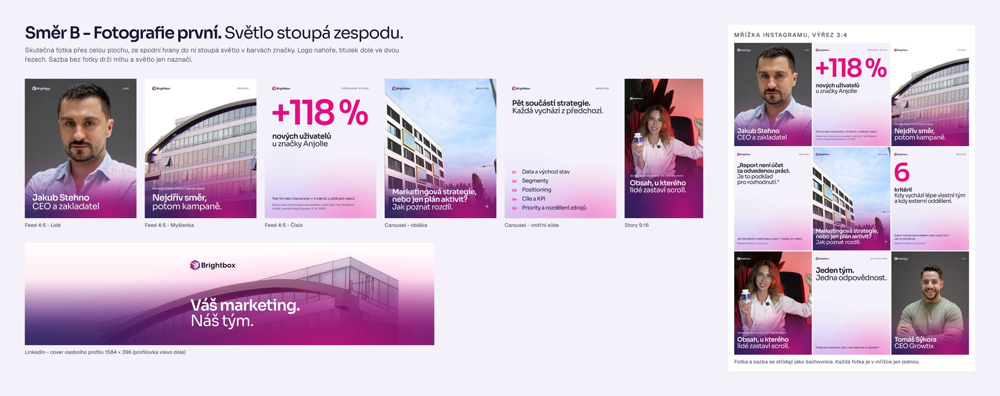
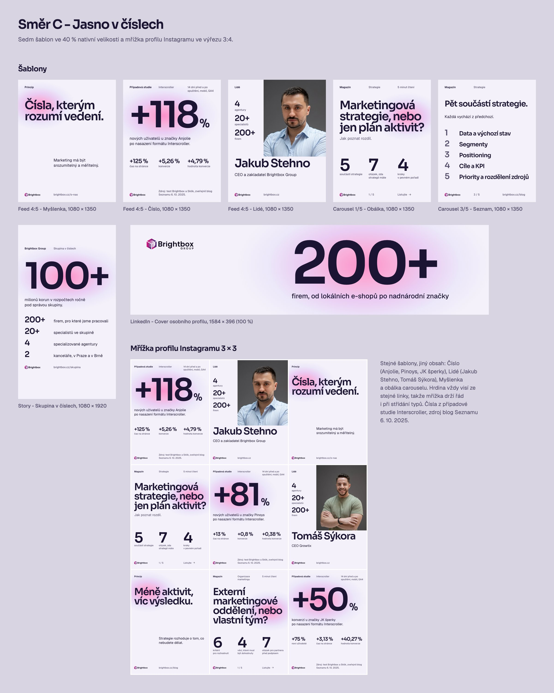

Sociální sítě, jak jsme vybírali
Čtyři směry šablon.
Vybráno 12. 10. 2026: spojení směrů A a B. Světlo zespodu a kompozice podle obsahu ze směru A, portréty lidí ze skupiny ze směru B. Fotky budov a reklamy klientů v sadě nejsou.
Současná sada v manuálu
Mlha s pastelovou září, titulek vlevo dole, hluboký přechod pro čísla a manifest. Čistá a světlá, ale podle kritiků v mřížce splývá a drobné texty jsou na telefonu pod 11 px. Z ní zůstal hluboký přechod na coveru LinkedInu.


Evoluce: světlo zespodu
Koule světla z loga leží těsně pod spodní hranou a její svit stoupá k obsahu. Každý post je krabice, do které zespodu svítí světlo.
- Jedno světlo s jasným zdrojem, pozná se i na malém náhledu v mřížce.
- Kompozice podle obsahu: titulek nahoře, číslo na ose, titulek dole ve světle.
- Titulky ve dvou řezech (SemiBold a Regular), fotka přes celou plochu se světlem zespodu.


Fotografie první
Hlavní roli hrají skutečné fotky lidí, kanceláří a práce. Zespodu do nich stoupá světlo v barvách značky a nese bílý titulek, jako u starých postů Brightboxu.
- Nejvíc emocí a lidskosti, nejblíž původním postům Brightboxu se světlem zespodu.
- Typografické šablony jako kontrapunkt mezi fotkami.
- Pozor: vlastních fotek je zatím málo, systém bude chtít pravidelné focení.


Jasno v číslech
Jedno obří číslo nebo výrok na klidné Mlze, světlo značky dopadá jen na to, co má čtenář vidět první. Přísná mřížka a stejné kotvy v celé sadě.
- Nejsilnější pro LinkedIn a vedení firem: čísla s metodikou a zdrojem.
- Obří čísla jsou čitelná i v mřížce profilu, nejmenší text 30 px.
- Nejméně emocí, fotka jen jako modul mřížky.


Kritika
Co našli kritici na současné sadě.
Stratég sociálních sítí
- Háčky místo sloganů. Nejsilnější věta webu „Platíte pět dodavatelů. Kdo z nich odpovídá za výsledek?“ v šablonách chybí.
- Čísla s metodikou. U testu Interscroller vždy „14 dní před a po spuštění, mobil, GA4“. Pro vedení vést obchodní metrikou (+50 % konverzí u JK šperků).
- Carousel s hodnotou. Sedm kontrolních otázek z článku přímo ve slidech, ne jen odkaz.
- Chybí typy: případová studie jako dokument, nabídka (návrh strategie zdarma), práce klienta, osobní post vedení, anketa.
QA art director
- 23 velikostí písma. Sjednotit na sedm stupňů, nejmenší text 32 px (11 px na telefonu).
- Osiřelá slova v pěti titulcích, ruční zlomy podle změřených šířek.
- Bezpečné zóny: adresa ve stories a titulek reelu zasahují do ovládání aplikace.
- Kontrast: malá značka na růžové záři a šedá čísla stran. Pravidla pomlček a předložek jsou bez chyby.
Rozhodnutí
Světlo zespodu ze směru A, portréty ze směru B.
Hotová sada má 38 šablon: devět příspěvků do mřížky, případovou studii a článek jako carousel, sedm stories a obálku reelu, profil, highlighty a covery. Zapracované jsou všechny body kritiky: háčky z webu, čísla s metodikou, kontrolní seznam přímo ve slidech, sedm velikostí písma od 30 px, ruční zlomy bez osiřelých slov a texty mimo bezpečné zóny.